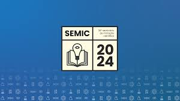

Feed de Notícias
OPORTUNIDADE DE BOLSA PIBIC
Iniciei a busca por um aluno para o projeto de Otimização de Painéis Solares. É uma excelente oportunidade para quem tem interesse em Energias Renováveis e programação básica (Python/Arduino).
18 Reações · 3 Comentários
3 Compartilhamentos
📢 [ANÚNCIO] As inscrições para o SEMIC 2024 foram abertas! Não perca a chance de submeter seu trabalho de pesquisa e extensão.
Prazo final: 30 de Novembro. Mais informações no site oficial.

55 Reações · 10 Comentários
15 Compartilhamentos
🎉 Finalizamos o projeto de Reciclagem de Plásticos com Baixo Custo! Foram 6 meses de muito trabalho e aprendizado. Os resultados superaram as expectativas e vamos apresentar o protótipo na próxima Feira de Inovação.
Um agradecimento especial aos meus colegas de equipe e ao Prof. Marcos pelo apoio!
32 Reações · 5 Comentários
1 Compartilhamento